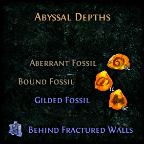
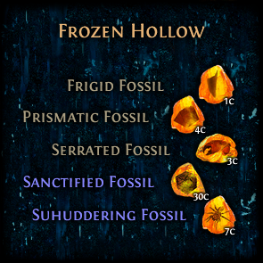
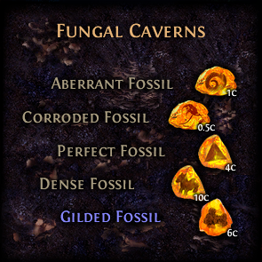
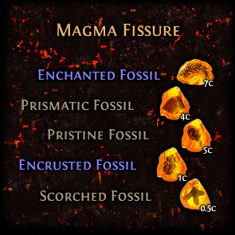
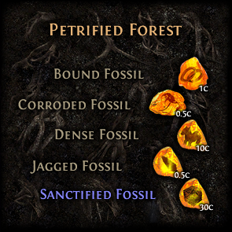
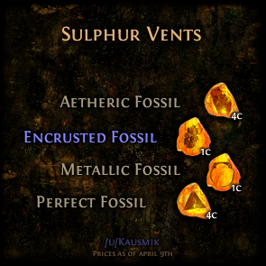

Guide
- Position the grid so that the O is on the hidden node
- Cross out dead-end nodes
- Cross out non-node paths
- Explore nodes that have 2 paths first
- Then try nodes that have 3 paths
Tips
- Only 1 path per non-node square, no overlapping paths
- Nodes usually have either 1, 3 or 4 connections, but not 2
- Non-node squares will have a fractured wall for loot
-
After zoning into a node, use the minimap to see if there is an extra path towards the direction
of the hidden node
- The path to the hidden node is almost never a straight line





